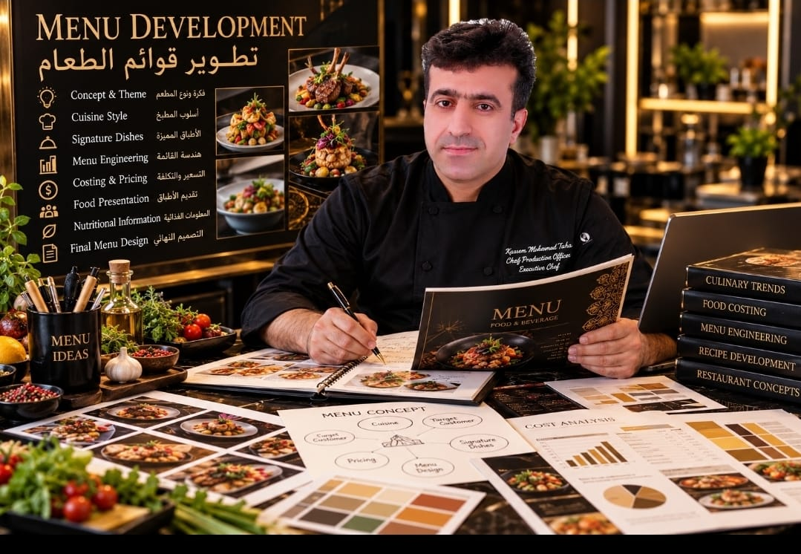

SY
SYRIA
Culinary roots and early professional foundation.

ABOUT ME
My professional journey began in 1989. Over more than three decades, my work developed from professional culinary operations into executive leadership, restaurant and hotel management, central kitchens, food safety, training and F&B business development.
My approach combines culinary knowledge with operational systems, cost control, purchasing, team development and practical solutions designed to build sustainable businesses.

My professional experience has developed across the Middle East and Asia, working with culinary operations, restaurants, hotels, central kitchens and hospitality businesses.
Culinary roots and early professional foundation.
Early professional experience and career development.
More than two decades of major F&B operations and business experience.
Hospitality and F&B experience within the regional market.
Current base for restaurant, hospitality and consulting activities.
My experience extends beyond cooking. I work across the full F&B business cycle — from concept development and kitchen planning to operations, systems, purchasing, cost control, food safety and team development.
“The business must depend on the system — not on one person.”
Strong systems create consistency, develop people and allow businesses to continue and grow.
Whether you are planning a new restaurant, hotel or central kitchen, or looking to improve your current operation, I provide practical consulting support based on real operational experience.